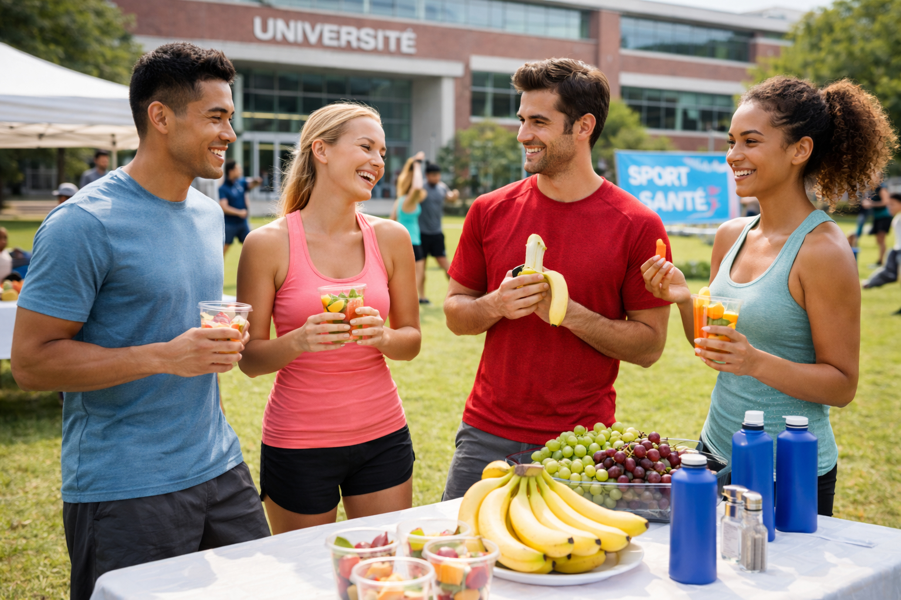

ℹ️ Informations pratiques
Lieu : Campus universitaire
Date : 15 avril 2025
Matériel : Tenue de sport, bouteille d’eau
Accessibilité : Activités adaptées à tous les niveaux
Conseils pour les participants
- Arriver 10 à 15 minutes avant le début de la journée pour l’accueil.
- Prévoir une tenue confortable et adaptée à la pratique sportive.
- Apporter une bouteille d’eau pour rester hydraté.
- Les activités sont accessibles à tous les étudiants, quel que soit votre niveau sportif.